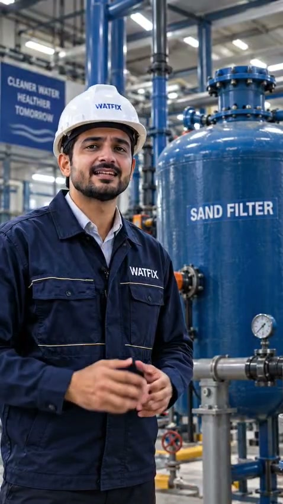
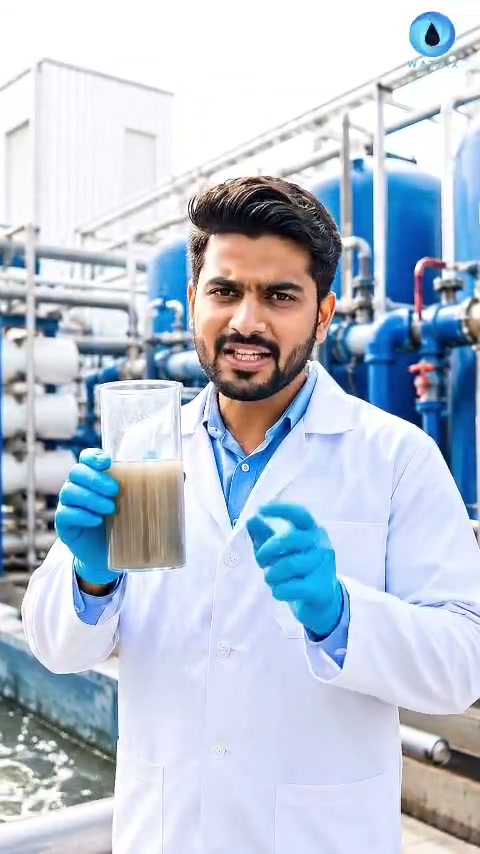
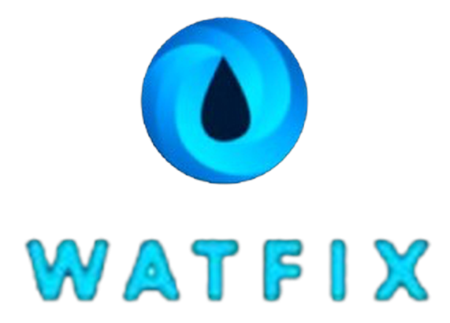

A Smarter Alternative to
Traditional Sand Filtration.
WATFIX PGM is an activated glass filter media engineered to replace ordinary sand media across swimming pools, municipal plants, and industrial water systems with 4–5 micron clarity, 50% lower chlorine use, and up to 80% backwash water savings.
Ultra-fine particle capture without relying on chemical filtration aids.
Activated micro-porosity vs ordinary glass and standard silica sand.
High resistance to wear, degradation, and biological colonization.
Convenient moisture-resistant bags ready for direct loading.
What is
WATFIX PGM?
WATFIX PGM is also known as Activated Glass Filter Media. Manufactured from specially treated glass, it represents a direct technological leap over ordinary silica sand in commercial and industrial water treatment.
The glass is processed to achieve precise particle geometry and activated to vastly increase surface area. Its negatively charged surface attracts organic molecules and sub-micron particulates while maintaining high redox potential.
Replaces Ordinary Sand
Drop-in media replacement for any pressure vessel or rapid gravity filter without modifying internal vessel piping or laterals.
Optimized Geometry
Raw glass is precision-crushed and graded to achieve uniform sub-angular particle size and shape without sharp edges.
Metal Oxide Catalysts
Contains permanent metal oxide catalysts integrated into the glass matrix, producing free radicals upon contact with water.
Self-Sterilizing Surface
High oxidation-reduction (redox) potential prevents bacterial biofilm attachment, bio-fouling, and wormhole channeling.
Engineered for Better Filtration.
Every attribute of WATFIX PGM is designed to optimize water quality, reduce backwash downtime, and lower long-term plant operating expenditure.
Fine filtration without relying on filtration aids.
Unlike traditional sand that allows particles down to only 20–40 microns without coagulants, WATFIX PGM mechanically captures sub-5 micron particulates right through the bed depth.
Extended Media Life
Designed to last significantly longer than traditional sand media without crushing or compacting.
Lower Operating Costs
Designed to reduce filtration energy, chemical dosing, and backwash water requirements.
High particle retention minimizes turbidity, removes suspended solids, and delivers pristine clarity across commercial and potable applications.
Safe handling for plant operators with no free crystalline silica hazards.
Smooth grain fluidization releases dirt quickly, using substantially less backwash water.
Sterilized & thermally activated during high-temperature processing.
Engineered for maximum hydraulic filtration efficiency across all plant flowrates.
One Media.
Different Filtration Requirements.
WATFIX PGM is supplied in three calibrated grain sizes. Choose application mode below to inspect recommended layer compositions from the technical datasheet.
Primary active filtration zone. Attracts organic solids, prevents biofilm accumulation, and provides ultra-fine mechanical trapping down to 4–5 microns.
Transition and intermediate support layer. Regulates hydraulic velocity and prevents fine media migration toward underdrain nozzles.
Bottom support and drain distribution bed. Ensures balanced flow distribution across the vessel lateral grid during both service and backwash cycles.
Built for Water. Across Industries.
Targeted water treatment performance configured for stringent industrial, municipal, and process effluent standards.
Municipal Waste Water
Sewage treatment plants (STP) and tertiary polishing to eliminate refractory organics, nitrogen, and bacteria.
Process & RO Pretreatment
Clarification and pre-filtration for Reverse Osmosis (RO) membranes, cooling towers, and boiler feed loops.
Industrial Effluent (ETP)
Heavy-duty filtration for textile dye baths, chemical manufacturing, pharmaceuticals, and zero liquid discharge.
Swimming Pools & Spas
Premier direct replacement for swimming pool sand filters (commercial resorts, hotels, Olympic & domestic pools).
See Filtration in Action.
Observe in real time how contaminated influent with suspended particulate matter is mechanically and electrostatically purified through the WATFIX PGM bed.
Raw Water Inflow
Untreated water carrying suspended solids, colloids, bacteria, and turbidity enters the top distribution manifold evenly.
Electrochemical Attraction
Negatively charged active glass grains attract positively charged organic matter and sub-micron particles electrostatically.
Catalytic Bed Trapping
Integrated metal oxide catalysts induce self-sterilizing redox conditions, eliminating biofilm and preventing bio-fouling.
Purified Water Outflow
Crystal clear effluent passes through bottom underdrains without chemical flocculant residuals or media carryover.
More Than Mechanical Filtration.
Biological Advantages of WATFIX PGM
Ordinary sand filters quickly accumulate bacteria that secrete sticky alginate slime, cementing grains together and creating bypass channels. WATFIX PGM actively resists colonization.
Phosphorus & Bacteria
Catalytic surface charges disrupt bacterial cell membranes and assist in the physical trapping and precipitation of phosphate species.
COD & BOD Reduction
Significantly lowers chemical and biochemical oxygen demand loads in wastewater treatment polishing stages.
TOC & Organic Pollutants
Attracts and retains dissolved and colloidal Total Organic Carbon molecules, residual oils, and surfactants.
TSS & VSS Solids
Removes Total Suspended Solids and Volatile Suspended Solids with ultra-low head loss accumulation over long filter runs.
Color & Fine Fibres
Removes tint and textile microfibers that slip straight through coarse silica sand filtration matrices.
Residual Minerals & Oils
Captures emulsified hydrocarbon fractions, priority metal oxides, and insoluble inorganic minerals.
See WATFIX Pure Glass Media
in Real-World Action.
Examine authentic laboratory, fluidization, turbidity removal, and plant vessel-loading demonstrations. High-clarity verification of particle morphology, sub-micron filtration, and rapid backwash efficiency.
Grade 1 Activated Glass Media Inspection & Flow Dynamics
Direct inspection of WATFIX PGM Grade 1 (0.5 – 1.5 mm). Demonstrates pure amorphous glass granules completely free from crystalline silica dust, showing instant fluid particle dispersion and uniform granule shape.
Video Selection Shelf
1. Grade 1 PGM Inspection & Flow
Amorphous glass particles free from silica dust.
2. Instant Water Clarification Test
Diamond 4–5µm pool clarity & 50% less chlorine.

3. Granule Morphology & Sizing
Anti-biofilm angular shape prevents algae nesting.

4. Fluidization & Backwash Test
Rapid debris release saving 80% backwash water.
5. Vessel & Pool Filter Packing
Direct pool sand replacement in 25 KG bags.
Designed for Waste Water Treatment.
WATFIX PGM directly overcomes the core structural limitations of sand media in wastewater treatment — eliminating bacterial clumping, channel formation, and gradual head-loss choking.
“Eliminates more than 90% of contaminants from sewage effluent”
Source: WATFIX PGM Technical Product Documentation & Treatment Benchmarks.
Rethinking the Traditional Sand Filter.
Side-by-side engineering evaluation based strictly on parameters and test data from the supplied WATFIX documentation.
Traditional Silica Sand
-
×
Higher Operating Costs: Frequent backwashing requires larger water volumes and energy.
-
×
Higher Chemical Dosing: Consumes 50% more chlorine and creates elevated disinfection by-products.
-
×
Coarser Filtration Cutoff: Particles below 20–40 μm pass freely without auxiliary chemical coagulants.
-
×
Shorter Lifespan: Requires replacement every 2–3 years due to attrition, compaction, and bio-calcification.
-
×
Bacterial Channeling: Organic biofilm colonizes silica pores, forming permanent bypass wormholes.
WATFIX PGM
-
✓
Up to 30% Cheaper Running Costs: Slashes backwash frequency, water wastage, and energy consumption.
-
✓
50% Lower Chlorine Consumption: Drastically reduces chemical additions and toxic disinfection by-products.
-
✓
Filtration Down to 4–5 Microns: 100% mechanical efficiency stated in supplied material without filtration aids.
-
✓
~4× Longer Life Cycle: High mechanical resilience guarantees years of stable continuous performance.
-
✓
Bio-Fouling & Channeling Resistance: Permanent catalysts maintain self-sterilizing redox surface state.
Is Activated Glass Filter Media preferable to sand filters?
In conventional sand filters, retained organic matter rapidly becomes a breeding ground for bacteria. As bacteria multiply, they secrete extracellular polymeric substances (biofilm) that glue sand grains together into solid blocks, causing bacterial channeling where contaminated water bypasses the bed unpurified.
To compensate, sand systems rely heavily on toxic chemical flocculants such as aluminum salts and excessive chlorine dosages to sanitize water.
WATFIX PGM resolves this fundamental issue at the material level. Its permanent catalytic surface prevents bacterial adhesion, eliminates the need for aluminum coagulants, minimizes required chlorine, and produces effluent with significantly lower chemical byproduct content.
Upgrade Your
Filtration Media.
Discover how WATFIX PGM can optimize your water treatment efficiency, reduce plant operating expenses, and provide pristine water clarity.
